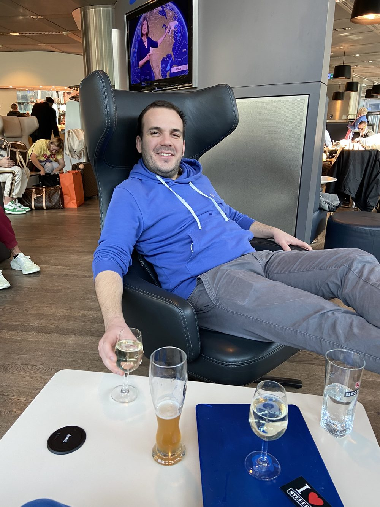
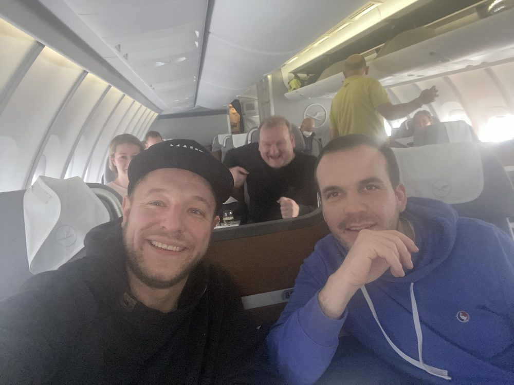
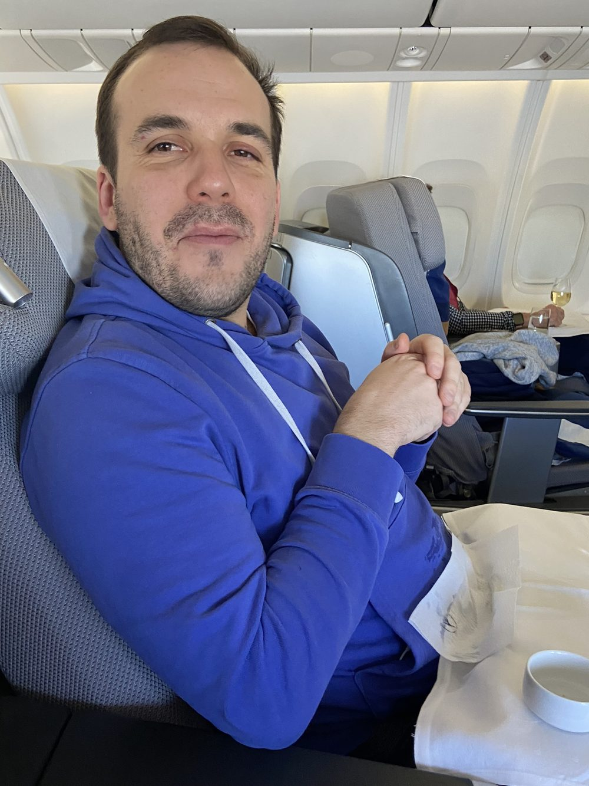
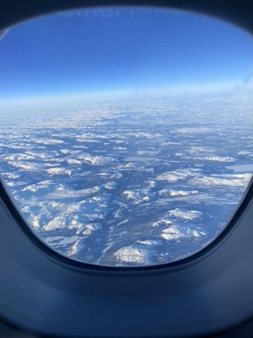
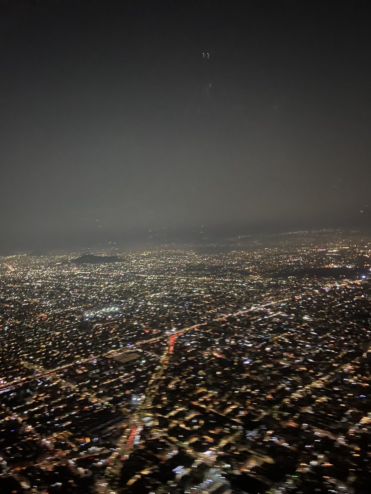
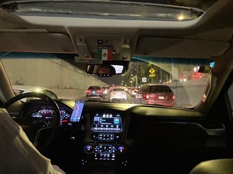

Abflug in Frankfurt: Der Urlaub beginnt, wo er beginnen sollte: in der Lounge, mit einem Bier in der Hand. Knapp zwölf Stunden Flug liegen vor uns, dazu sieben Stunden Zeitverschiebung – der Tag wird lang.


Gute Laune an Bord, bevor der Jetlag zuschlägt.


Irgendwo über dem Norden: Schneefelder und Wolken, so weit das Auge reicht.
Landeanflug auf Mexiko-Stadt: Im Anflug zeigt sich das nächtliche Lichtermeer einer der größten Metropolregionen der Welt – über 20 Millionen Menschen auf rund 2.240 m Höhe in einem ehemaligen Seebecken. Die Stadt steht auf dem Grund des Texcoco-Sees, auf dem die Azteken einst Tenochtitlan gründeten.


Mit dem Fahrer vom Flughafen in die Stadt – der erste Eindruck: Verkehr, auch um diese Uhrzeit.
Erster Abend: Koffer abstellen, raus auf einen ersten Drink. Der Jetlag kann warten.